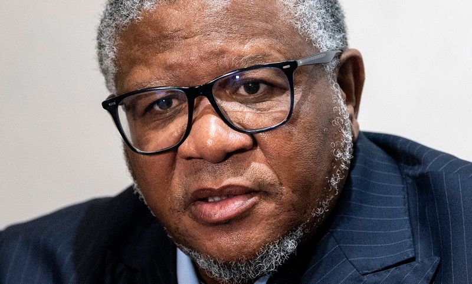

The ANC and the DA formally opened coalition talks on Sunday afternoon, as parties negotiate over who will govern councils after the 4 November local government elections. The talks covered the make-up and governance of municipal councils, and both sides are expected to meet again.

The meeting came despite reported resistance inside the ANC. Media reports say the party’s National Executive Committee decided to treat the DA as a coalition partner of last resort, and Daily Maverick reports that the ANC has ruled out a national stability pact with the DA modelled on the Government of National Unity. The Sunday Times reported that ActionSA is the ANC’s preferred partner. An ANC source told Daily Maverick that the party is not saying no to the DA.
A fragmented result
In the final results released by the Electoral Commission, the ANC remained the largest party with 30.8% of the vote, down from 46% in 2021 and its worst showing since it came to power. With no party winning outright in many councils, deals will decide who governs.
Who is talking to whom
The DA met ActionSA on Thursday, and met the MK Party on Saturday after approaching former president Jacob Zuma. No deal was announced after either meeting. ActionSA has kept its objections to the DA’s mayoral candidates, Helen Zille in Johannesburg and Cilliers Brink in Tshwane.
The ANC met the EFF on Friday. On Saturday it met ActionSA, the MK Party, Build One South Africa and the IFP, according to its social media statements. It has also held talks with the African Content Movement, Afrika Mayibuye and Rise Mzansi. Afrika Mayibuye’s Floyd Shivambu indicated conditional support for coalitions with the ANC that exclude the DA.
Daily Maverick also reports that the ANC is considering going into opposition in councils where it won less than 30% of the vote, and in metros where it won less than 20%.
What next
The ANC is expected to brief the media on its coalition talks on Tuesday 17 November.